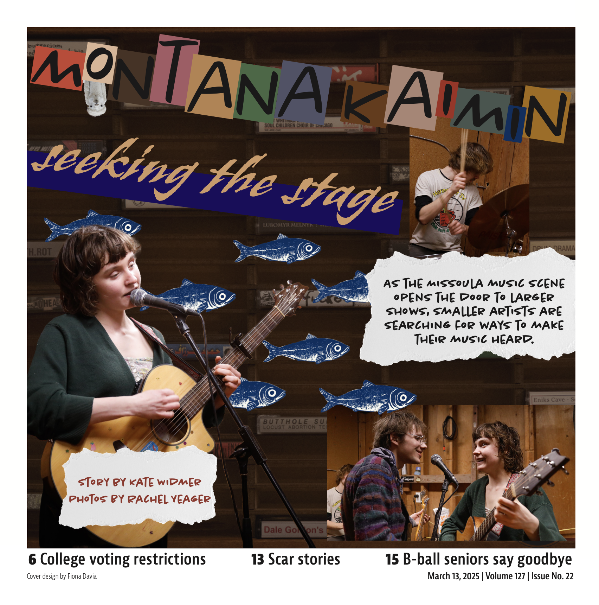
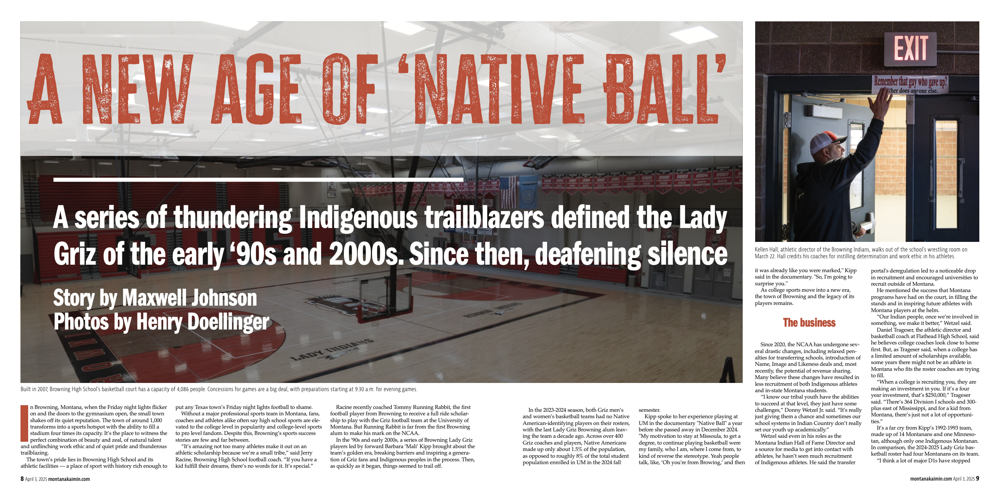

Montana Kaimin — Issue 22
I designed the cover for this issue, which centered on Missoula’s DIY music scene. I wanted to create something visually chaotic and vibrant that matched the spirit of the story.
Montana Kaimin — Issue 24
This issue explored Indigenous representation in Montana basketball. My layout aimed to balance powerful imagery with clean, readable type hierarchy.
